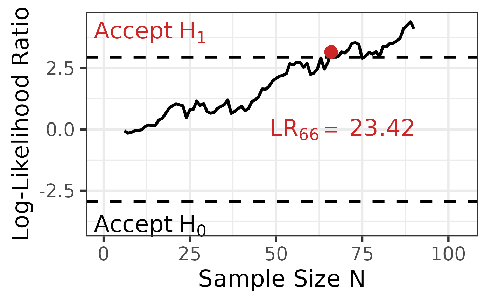

![[Experimental]](figures/lifecycle-experimental.svg)
Creates plots for the results of the seq_anova() function.
Usage
plot_anova(
anova_results,
labels = TRUE,
position_labels_x = 0.15,
position_labels_y = 0.075,
position_lr_x = 0.05,
position_lr_y = NULL,
font_size = 25,
line_size = 1.5,
highlight_color = "#CD2626"
)Arguments
- anova_results
result object of the seq_anova() function (argument must be of class
seq_anova_results).- labels
show labels in the plot.
- position_labels_x
position of the boundary labels on the x-axis. 0 positions the center on the 0 of the x-axis.
- position_labels_y
position of the boundary labels on the y-axis. 0 positions the labels on the dotted lines.
- position_lr_x
scales the position of the LR label on the x-axis. 0 positions the label directly under the last calculated LR.
- position_lr_y
scales the position of the LR label on the x-axis. 0 positions the label on the 0 of the y-axis
- font_size
font size of the plot.
- line_size
line size of the plot.
- highlight_color
highlighting color, default is "#CD2626" (red).
Examples
# simulate data for the example ------------------------------------------------
set.seed(333)
data <- sprtt::draw_sample_normal(3, f = 0.25, max_n = 30)
# calculate the SPRT -----------------------------------------------------------
anova_results <- sprtt::seq_anova(y~x, f = 0.25, data = data, plot = TRUE)
# plot the results -------------------------------------------------------------
sprtt::plot_anova(anova_results)
#> Warning: All aesthetics have length 1, but the data has 85 rows.
#> ℹ Please consider using `annotate()` or provide this layer with data containing
#> a single row.

sprtt::plot_anova(anova_results,
labels = TRUE,
position_labels_x = 0.5,
position_labels_y = 0.1,
position_lr_x = -0.5,
font_size = 25,
line_size = 2,
highlight_color = "green"
)
#> Warning: All aesthetics have length 1, but the data has 85 rows.
#> ℹ Please consider using `annotate()` or provide this layer with data containing
#> a single row.
 sprtt::plot_anova(anova_results,
labels = FALSE
)
#> Warning: All aesthetics have length 1, but the data has 85 rows.
#> ℹ Please consider using `annotate()` or provide this layer with data containing
#> a single row.
# further information ----------------------------------------------------------
# run this code:
vignette("one_way_anova", package = "sprtt")
#> Warning: vignette ‘one_way_anova’ not found
sprtt::plot_anova(anova_results,
labels = FALSE
)
#> Warning: All aesthetics have length 1, but the data has 85 rows.
#> ℹ Please consider using `annotate()` or provide this layer with data containing
#> a single row.
# further information ----------------------------------------------------------
# run this code:
vignette("one_way_anova", package = "sprtt")
#> Warning: vignette ‘one_way_anova’ not found